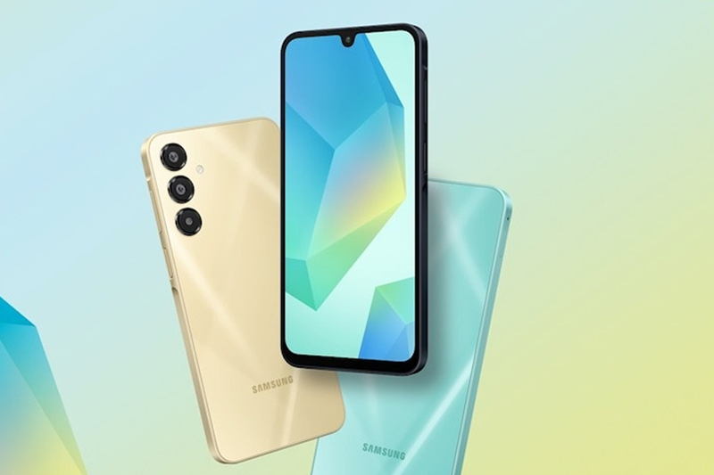
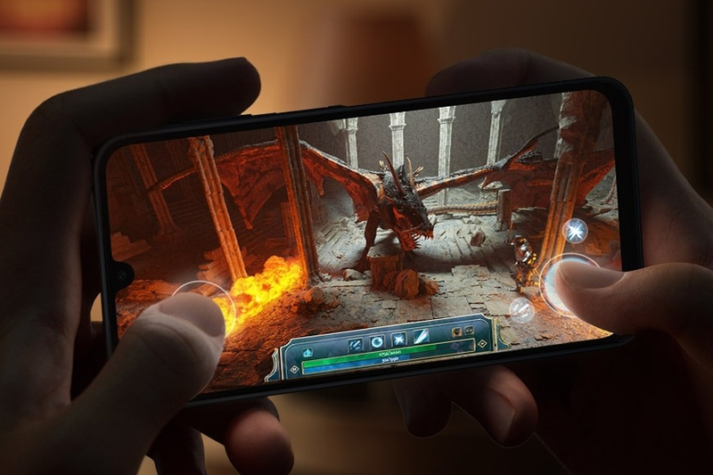
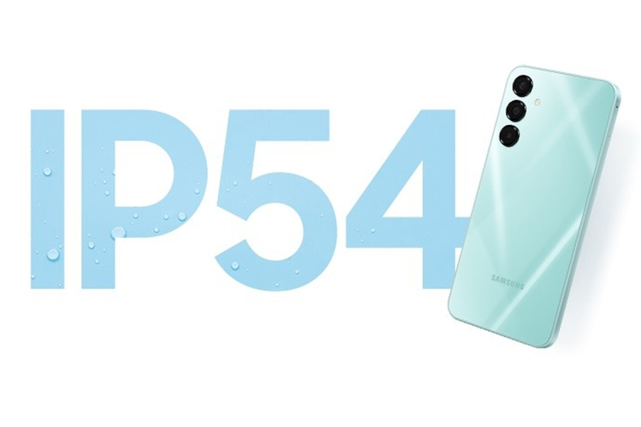
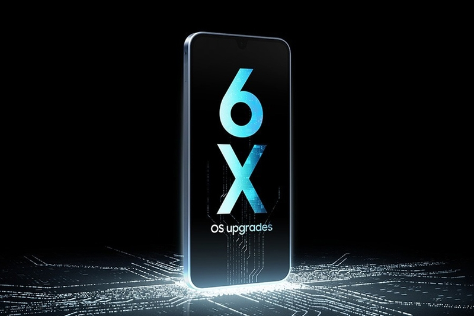
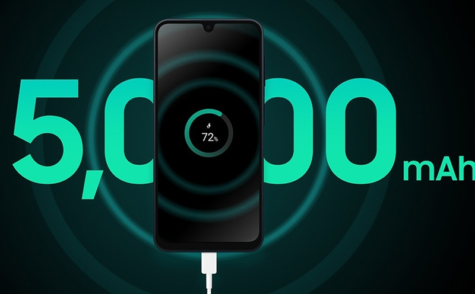
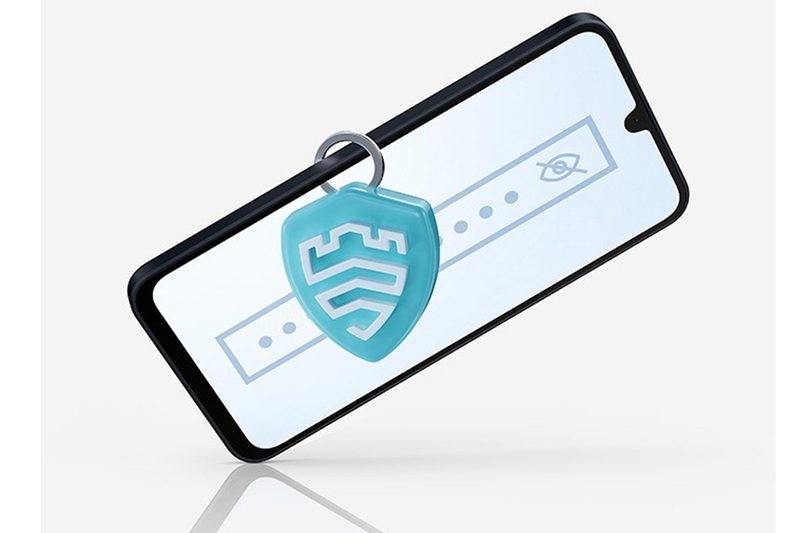

Samsung Galaxy A16 5G is considered a good entertainment smartphone because of its large 6.7-inch screen, using Super AMOLED panel. This is a high-end screen technology developed by Samsung, for every detail to be sharp, impressive color reproduction. Thanks to that, users can immerse themselves in their favorite content, entertainment, watching movies, gaming with beautiful image quality and vivid, brilliant colors. Another plus point of Galaxy A16 5G is the 90Hz refresh rate, making swiping operations smoother, especially when watching videos, playing games or scrolling pages.
The Galaxy A16 5G has a modern look, only 7.9mm thick, fits neatly in the palm of your hand, easy to operate or put in your pocket or bag. The phone also helps you stand out with trendy colors for Gen Z: black, yellow and green. These colors not only bring an attractive appearance, but also help young users express their own personality and style.
Every frame captured by the Galaxy A16 5G shines thanks to the professional triple camera system. In which, the main camera has a resolution of 50MP to capture your memories vividly. From photos of natural scenery, everyday moments to memorable memories, the main camera of the Galaxy A16 5G delivers excellent image quality, helping you fully preserve precious experiences.
The Galaxy A16 5G is powered by the Dimensity 6300, with 8GB of RAM and 128GB of storage. As for the processor, this is a 6nm, 8-core chip, 2 high-performance Cortex-A76 cores clocked at 2.4 GHz and 6 power-saving Cortex-A55 cores clocked at 2.0GHz. Thanks to that, the Galaxy A16 5G is well-rated for its gaming capabilities in its price range, helping users enjoy smooth, stable games.
With IP54 standard, users can rest assured when using Galaxy A16 5G, because the device is equipped with the ability to prevent water intrusion from nozzles in all directions and is effectively dustproof. You can comfortably use the phone in unexpected situations such as light rain. IP54 standard also ensures that dirt does not penetrate internal components, contributing to improving the durability and lifespan of the device.
Galaxy A16 5G has a long-term use with a commitment to update 6 years of operating system upgrades and 6 years of security updates. It is known that Galaxy A16 5G is the first model in the segment with such a strong commitment. Regular software updates not only bring new features and optimize the user experience, but also play an important role in improving the device's energy consumption efficiency. Thus, Galaxy A16 5G will be able to manage the battery more effectively, increasing battery life throughout the product's life cycle.
Galaxy A16 5G offers a durable all-day experience thanks to its large 5,000 mAh battery. With this battery capacity, users can comfortably use their phone for studying, working, or entertainment without worrying about having to charge it constantly. In particular, for students, Galaxy A16 5G is an ideal choice thanks to its convenience, being able to bring it to school without having to charge it many times a day. Even for users who often travel or work outdoors, this battery ensures that the device can operate continuously for many hours, meeting diverse usage needs.
Galaxy A16 5G comes with Samsung Knox, a defense-grade multi-layered security system. Samsung Knox helps protect your phone from malware or hackers, keeping your personal information such as PINs, passwords, and sensitive data safe.
